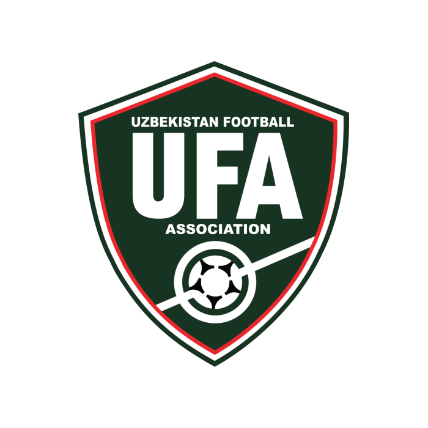
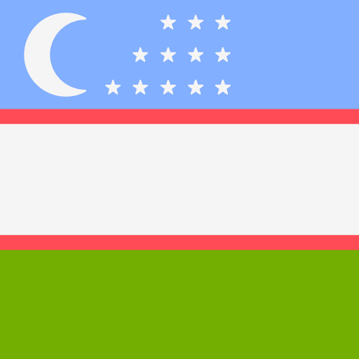
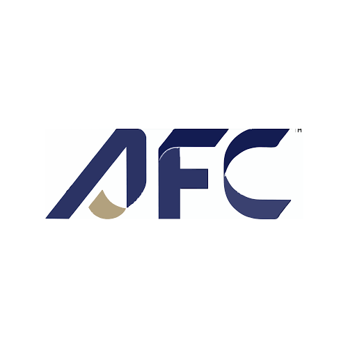
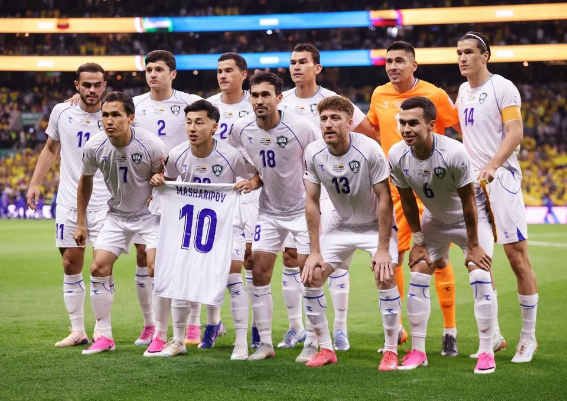

UzbekistanThe Uzbekistan national football team represents Uzbekistan in men's international football and is controlled by the Uzbekistan Football Association, the governing body for football in Uzbekistan.
-

Emblem
-

Nickname(s)
White Wolves
Turanians
-
Association
Uzbekistan Football Association
UFA
-

Confederation
AFC
Africa
-

FIFA code
UZB
-

Appearances
1
first in 2026
-

Best result
TBD
2026
2026
-

Fabio Cannavaro
Head coach
(Italy)
-

1. Utkir Yusupov
Goalkeeper
Born - January 4, 1991
Aged 35
Caps 40
Club - Navbahor Namangan
-

12. Abduvohid Nematov
Goalkeeper
Born - March 20, 2001
Aged 25
Caps 8
Club - Nasaf
-

16. Botirali Ergashev
Goalkeeper
Born - June 23, 1995
Aged 30
Caps 2
Club - Neftchi Fergana
-

2. Abdukodir Khusanov
Defender
Born - February 29, 2004
Aged 22
Caps 27
Club - Manchester City (England)
-

3. Khojiakbar Alijonov
Defender
Born - April 19, 1997
Aged 29
Caps 40
Club - Pakhtakor
-

4. Farrukh Sayfiev
Defender
Born - January 17, 1991
Aged 35
Caps 46
Club - Neftchi Fergana
-

5. Rustam Ashurmatov
Defender
Born - July 7, 1996
Aged 29
Caps 49
Club - Esteghlal (Iran)
-

13. Sherzod Nasrullaev
Defender
Born - July 23, 1998
Aged 27
Caps 31
Club - Nasaf
-

15. Umar Eshmurodov
Defender
Born - November 30, 1992
Aged 33
Caps 29
Club - Nasaf
-

18. Abdulla Abdullaev
Defender
Born - September 1, 1997
Aged 28
Caps 17
Club - Dibba (UAE)
-

24. Bekhruz Karimov
Defender
Born - August 7, 2007
Aged 18
Caps 2
Club - Surkhon Termiz
-

25. Avazbek Ulmasaliev
Defender
Born - March 27, 2000
Aged 26
Caps 0
Club - AGMK
-

26. Jakhongir Urozov
Defender
Born - January 18, 2004
Aged 22
Caps 4
Club - Dinamo Samarqand
-

6. Akmal Mozgovoy
Midfielder
Born - April 2, 1999
Aged 27
Caps 25
Club - Pakhtakor
-

7. Otabek Shukurov
Midfielder
Born - June 22, 1996
Aged 29
Caps 84
Club - Baniyas (UAE)
-

8. Jamshid Iskanderov
Midfielder
Born - October 16, 1993
Aged 32
Caps 38
Club - Neftchi Fergana
-

9. Odiljon Hamrobekov
Midfielder
Born - February 13, 1996
Aged 30
Caps 72
Club - Tractor (Iran)
-

10. Ruslanbek Jiyanov
Midfielder
Born - June 5, 2001
Aged 25
Caps 5
Club - Navbahor Namangan
-

11. Oston Urunov
Midfielder
Born - December 19, 2000
Aged 25
Caps 42
Club - Persepolis (Iran)
-

17. Dostonbek Khamdamov
Midfielder
Born - July 24, 1996
Aged 29
Caps 34
Club - Pakhtakor
-

19. Azizjon Ganiev
Midfielder
Born - February 22, 1998
Aged 28
Caps 19
Club - Al Bataeh (UAE)
-

22. Abbosbek Fayzullaev
Midfielder
Born - October 3, 2003
Aged 22
Caps 32
Club - İstanbul Başakşehir (Turkey)
-

23. Sherzod Esanov
Midfielder
Born - February 1, 2003
Aged 23
Caps 1
Club - Bukhara
-

14. Eldor Shomurodov
Forward
Born - June 29, 1995
Aged 30
Caps 92
Club - İstanbul Başakşehir (Turkey)
-

20. Azizbek Amonov
Forward
Born - October 30, 1997
Aged 28
Caps 12
Club - Dinamo Samarqand
-

21. Igor Sergeev
Forward
Born - April 30, 1993
Aged 33
Caps 83
Club - Persepolis (Iran)